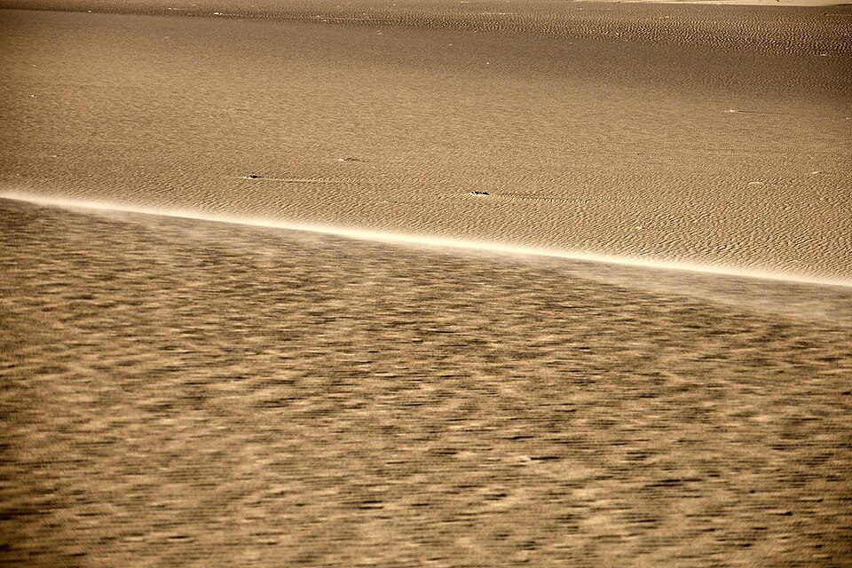
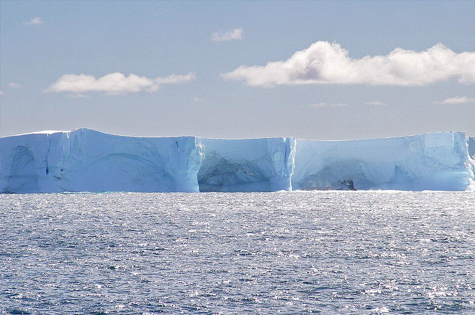

Planet Earth · 6 articles
World geography
Continents, mountains, deserts, islands and poles: the planet's great landscapes and the astonishing variety of Spain.
The Earth's surface is a mosaic of landscapes: mountain ranges that are still rising, deserts where it has not rained for centuries, thousands of islands and two ice-covered poles. This section explores the main features of its geography, with a special stop in Spain.
 Continents and countriesFive, six or seven continents? Area, population and curiosities of each, and the largest, smallest and most populous countries.
Continents and countriesFive, six or seven continents? Area, population and curiosities of each, and the largest, smallest and most populous countries. Mountains and mountain rangesFrom Everest to the Andes: how mountains form, the highest peaks on each continent and why the Himalayas are still rising.
Mountains and mountain rangesFrom Everest to the Andes: how mountains form, the highest peaks on each continent and why the Himalayas are still rising.
DesertsSand, salt and ice: the Sahara, the Atacama, the Uyuni salt flat and why Antarctica is the largest desert on the planet. Islands and coastsGreenland, the Galápagos, the Maldives and the Canary Islands: how islands form, and the largest and strangest on the planet.
Islands and coastsGreenland, the Galápagos, the Maldives and the Canary Islands: how islands form, and the largest and strangest on the planet.
The polesAntarctica and the Arctic: the frozen continent, the race to the South Pole, the midnight sun and ice that is melting. The geography of SpainA country of mountains, plateaus, volcanoes and two seas: the relief, rivers, climates and most astonishing landscapes of Spain.
The geography of SpainA country of mountains, plateaus, volcanoes and two seas: the relief, rivers, climates and most astonishing landscapes of Spain.